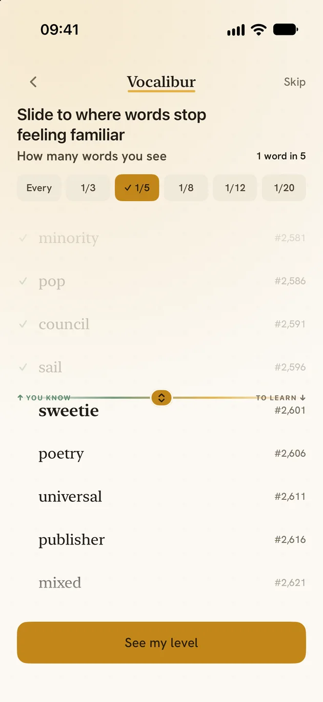

Which words should you learn?
Start with what you already know.
Scroll through the words, from the most common to the rarest, and set your starting point. Vocalibur then introduces new words by frequency: 30,000 cards, level guides and 55 themes.